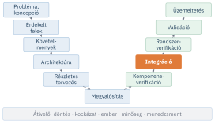
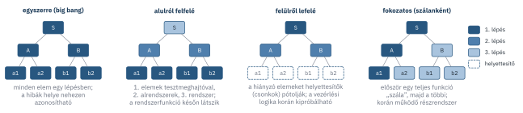
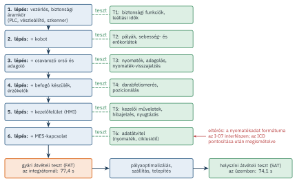

A fejezet feldolgozása után képes leszel:
- elmagyarázni az integráció célját és helyét a V-modell jobb ágán;
- összevetni az integrációs stratégiákat, és indokoltan választani közülük;
- azonosítani és dokumentálni a rendszer interfészeit, és megkülönböztetni az interfészkövetelmény-dokumentumot (IRD) és az interfészvezérlő dokumentumot (ICD);
- integrációs tervet készíteni, amely lépésenként megadja az integrálandó elemeket, a segédeszközöket, a felelősöket és a lépést lezáró ellenőrzést;
- felismerni a jellegzetes integrációs kockázatokat, és tervezni a kezelésüket.
A V-modell bal ága a rendszert lebontja, a jobb ága összerakja. Az összerakás nem egyszerű szerelés: a külön-külön jól működő elemek együtt gyakran nem működnek, mert az interfészeken, a köztük lévő kölcsönhatásokban rejlő hibák csak ekkor jelennek meg. Az ISO/IEC/IEEE 15288 az integrációt önálló műszaki folyamatként írja le: célja, hogy a rendszerelemekből olyan megvalósult rendszert állítson össze, amely teljesíti a rendszerkövetelményeket, és előkészítse a verifikációt és az átadást (ISO/IEC/IEEE 2023, 6.4.8. szakasz; NASA 2016, 5.2. szakasz). Az integrációra a rendszerhierarchia minden szintjén szükség van: az alkatrészekből alrendszer, az alrendszerekből rendszer lesz.
Két dolgot érdemes már az elején rögzíteni. Az integráció nem egyszeri esemény a gyártás végén: elemzéssel és szimulációval kezdődik, és egyre valószerűbb, egyre több funkciót tartalmazó összeállításokon át jut el a végtermékig. Az integráció tervezését pedig már a koncepció kialakításakor el kell kezdeni, mert az architektúra döntései (például a modulhatárok) meghatározzák, milyen sorrendben lehet majd összeépíteni a rendszert (8. fejezet).
22.1. Integrációs stratégiák
Az integrációs stratégia megadja, milyen sorrendben, milyen csoportokban kerülnek össze az elemek, és mi ellenőrzi az egyes lépéseket. A szabvány szerint a stratégia célja, hogy az integráció idejét, költségét és kockázatát a lehető legkisebbre csökkentse (ISO/IEC/IEEE 2023, 6.4.8. szakasz). Minél nagyobb, összetettebb vagy érzékenyebb a rendszer, annál fontosabb a helyes sorrend. A sorrendet rendszeresen felül kell vizsgálni, mert a gyártási és szállítási ütemezés változásai érvényteleníthetik a korábbi döntések alapjait. A leggyakoribb stratégiákat a 22.1. ábra mutatja (INCOSE 2023).

- Egyszerre (big bang): minden elemet egy lépésben kapcsolunk össze. Kis, jól ismert rendszernél gyors, de ha valami nem működik, nehéz kideríteni, melyik elem vagy interfész a hibás.
- Alulról felfelé: előbb az elemeket, majd az alrendszereket, végül a rendszert integráljuk. Minden szinten csak ellenőrzött építőelemek kerülnek össze, de a rendszer egészének viselkedése csak a végén látszik; a hiányzó felsőbb szintet tesztmeghajtók pótolják.
- Felülről lefelé: a rendszer vezérlő logikája készül el először, a hiányzó elemeket egyszerű helyettesítők (csonkok, szimulátorok) pótolják. A rendszerszintű működés korán kipróbálható, a helyettesítők azonban munkát igényelnek, és pontatlanságuk elfedhet hibákat.
- Fokozatos, szálanként: először egy teljes funkció „szálát” integráljuk a bemenettől a kimenetig, majd a többit. Korán van működő, bemutatható részrendszer, és a legfontosabb funkciók a legtöbbet tesztelődnek.
A választást a rendszer szerkezete, az elemek elkészülésének sorrendje, a kockázatok és a rendelkezésre álló segédeszközök határozzák meg. A gyakorlatban a stratégiák keverednek: a mechanikai alrendszereket alulról felfelé, a szoftvert felülről lefelé, a kritikus funkciót szálanként integrálják.
22.2. Interfészmenedzsment
Az interfész két rendszerelem vagy a rendszer és környezete közötti kapcsolat, amelyen anyag, energia, információ vagy erőhatás halad át. Az interfészek típusai: mechanikai (illesztés, rögzítés, tömeg), energetikai (villamos, pneumatikus), adat- és jelinterfész, ember–gép interfész és környezeti interfész (hő, rezgés, elektromágneses hatások). Az interfészeket a funkcióelemzés és az N²-diagram segítségével azonosítjuk (8. fejezet).
A nagy projektek gyakorlatában az interfészek dokumentálására három dokumentumtípus terjedt el (Defense Acquisition University 2001; NASA 2016, 5.2. szakasz és L függelék):
- az interfészkövetelmény-dokumentum (IRD) az interfész követelményeit rögzíti, és lehetőleg nem írja elő a megoldást;
- az interfészvezérlő dokumentum (ICD) végső formájában az IRD követelményeinek részletes megvalósítását írja le (méretek, csatlakozók, jelek, adatformátumok, időzítés);
- az interfészvezérlési terv az IRD-k és ICD-k kezelésének folyamatát határozza meg: hogyan tárják fel és oldják fel az összeférhetetlenségeket, és hogyan értékelik az interfészt érintő tervezési változtatások hatását.
Az interfészkezelés az életcikluson átívelő tevékenység: az interfészeket azonosítani, dokumentálni és a változásaikat szabályozottan kezelni kell a teljes életciklus alatt (INCOSE 2023). A kompatibilitási elemzés igazolja, hogy az interfész-meghatározás teljes, és a változások nyomon követhetők; enélkül előfordulhat, hogy egy elem a rendszerbe illesztve nem a szándék szerint működik.
A csapat az N²-diagram (8. fejezet) alapján nyolc interfészt azonosított, és mindegyikhez felelőst és ICD-t rendelt (22.1. táblázat). A két legkockázatosabb interfész a kezelő és a kezelőfelület közötti (I-06), mert itt a tervezett működés az emberen múlik (11. fejezet), és a csavarozó vezérlője és a MES közötti (I-07), mert a két oldalt két különböző beszállító fejleszti.
| Azonosító | Interfész | Típus | Mi halad át? | Felelős |
|---|---|---|---|---|
| I-01 | kobot – csavarozó orsó | mechanikai, energetikai, jel | rögzítés, tömeg, 24 V, indítás/kész | robotintegrátor |
| I-02 | csavarozó orsó – csavaradagoló | mechanikai, pneumatikus | csavar, sűrített levegő | robotintegrátor |
| I-03 | kobot – cellavezérlés (PLC) | jel, adat | indítás, kész, hibakód | robotintegrátor |
| I-04 | lézerszkenner – biztonsági vezérlés | biztonsági jel | védőmező megsértése, leállítás | biztonsági mérnök |
| I-05 | befogó készülék – motorház | mechanikai | pozicionálás, rögzítés | gyártástechnológus |
| I-06 | kezelő – kezelőfelület | ember–gép | utasítás, hibajelzés, nyugtázás | ergonómus, rendszermérnök |
| I-07 | csavarozó vezérlő – MES | adat | nyomaték, szög, megfelelő/nem megfelelő, ciklusidő | informatika, beszállító |
| I-08 | cella – üzem | energetikai, környezeti | 400 V, sűrített levegő, padló, hőmérséklet | karbantartás |
22.3. Az integrációs terv
Az integrációs terv a stratégiát lépésekre bontja. Indokolja a választott stratégiát (ha szükséges, az alternatívák elemzésével), és lépésenként megadja a tevékenységek helyét, az integrálandó elemeket, a szükséges segédeszközöket (különleges szoftver, teszteszközök, csonkok és meghajtók a még hiányzó elemek szimulálására), a telepítés utáni integrációs tevékenységeket, a lépést követő verifikációt, a felelősöket és az ütemezést. A stratégia egyben az építési, a verifikációs és a telepítési terv alapja is.
Minden integrációs lépést ellenőrzés zár: csak akkor lépünk tovább, ha az eddig összerakott rész működik. Így a hiba mindig a legutóbb hozzáadott elemben vagy interfészében keresendő. Az integráció két jellegzetes mérföldköve a gyári átvételi teszt (factory acceptance test, FAT) a beszállítónál vagy az integrátornál, és a helyszíni átvételi teszt (site acceptance test, SAT) a felhasználás helyén. A kettő között a rendszer környezete megváltozik: más az energiaellátás, a padló, a hálózat, és mások a kezelők.
A csapat alulról felfelé és szálanként vegyes stratégiát választott (22.2. ábra). Elsőként a vezérlés és a biztonsági áramkör került össze, mert minden további lépés csak működő biztonsági funkciók mellett végezhető biztonságosan. Ezután a kobot, a csavarozó orsó és az adagoló, a befogó készülék, a kezelőfelület és végül a MES-kapcsolat következett; minden lépést teszt zárt. A hatodik lépésben derült ki, hogy a csavarozó vezérlője a nyomatékot más mértékegységben és tizedesjegy-pontossággal küldi, mint amit a MES vár (I-07). A hibát az ICD pontosítása és a fogadó oldal átalakítása oldotta meg, a T6 tesztet megismételték. A gyári átvételi teszten a ciklusidő 77,4 s volt; a kobot pályájának optimalizálása után a helyszíni átvételen 74,1 s (6. fejezet).

22.4. Integrációs kockázatok és tanulságok
Az integráció a projekt egyik legkockázatosabb szakasza, mert itt derül ki minden, amit a tervezés során nem gondoltak végig. A leggyakoribb kockázatok:
- későn rögzített vagy kétértelmű interfészek: ha az ICD csak a gyártás után készül el, a két oldal eltérően értelmezi;
- beszállítói elemek ismeretlen viselkedése: a kereskedelmi termékek dokumentációja ritkán írja le a határhelyzeteket;
- a teszt- és az üzemi környezet eltérése: ami az integrátor csarnokában működik, az üzemben másként viselkedhet;
- szoftver- és firmware-változatok: az integráció közben frissített szoftver más viselkedést mutat;
- a segédeszközök hiánya: ha nincs szimulátor vagy csonk, a lépés csak akkor végezhető el, amikor minden elem megérkezett, és a stratégia észrevétlenül „big bang”-gé válik.
Gyakran idézett mérnöki szabály, hogy úgy kell tesztelni, ahogyan a rendszert használni fogják, és úgy kell használni, ahogyan tesztelték. Ez az integrációra is igaz: a lépéseket záró teszteknek a valós működési feltételeket kell közelíteniük.
A ForgácsTech problémamegfogalmazása korlátként rögzítette, hogy a gépek vezérlőinek gyártói garanciáját nem szabad veszélyeztetni (4. fejezet). Ezért a MES és a gépek közötti interfészt csak olvasó adatkapcsolatként határozták meg: a MES a vezérlők szabványos adatfelületéről olvassa a gépállapotot és a darabszámot, de nem ír a vezérlőbe. A régebbi esztergáknál, ahol ilyen felület nincs, külső érzékelők (áramfelvétel, ajtókapcsoló) adják a jelet. Az integrációt szálanként végezték: elsőként egyetlen megmunkáló központ teljes adatútját kötötték be a gépállapottól az OEE-kijelzőig, és csak a működő szál után következett a többi gép.
A szoftverfejlesztésben a folyamatos integráció azt jelenti, hogy a fejlesztők változtatásait naponta többször egy közös változatba olvasztják, és minden összeolvasztás után automatikus tesztek futnak. A gondolat a mechatronikai rendszerekre is átvihető: a digitális iker és a hardver a hurokban (hardware-in-the-loop) tesztelés lehetővé teszi, hogy a vezérlőszoftvert a valós hardver elkészülte előtt szimulált környezetben integrálják és teszteljék (3. fejezet). A virtuális üzembe helyezés így a FAT előtt feltárhatja az interfész- és logikai hibák nagy részét.
Gyakori hiba, hogy az interfészeket nem azonosítják és nem dokumentálják külön, mert „a rajzokon úgyis rajta van”. A rajz azonban csak az egyik oldalt mutatja; a két oldal közötti megállapodást, a mértékegységeket, a tűréseket, az időzítést és a hibahelyzetek kezelését senki nem rögzíti. Az integráció során ezek a hiányok egyszerre jelentkeznek, amikor a legdrágább kijavítani őket.
- Az integráció az elemekből a magasabb szintű terméket állítja össze, és igazolja, hogy együtt működnek; a rendszerhierarchia minden szintjén szükséges, és tervezését a koncepciónál kell kezdeni.
- A stratégiák: egyszerre, alulról felfelé, felülről lefelé, szálanként; a gyakorlatban vegyesen alkalmazzák őket, a sorrendet műszaki és üzleti szempontok együtt határozzák meg.
- Az interfészeket azonosítani, dokumentálni és szabályozottan változtatni kell; az IRD a követelményeket, az ICD a megvalósítást, az interfészvezérlési terv a kezelés folyamatát rögzíti.
- Az integrációs terv lépésenként megadja az elemeket, a segédeszközöket, a felelősöket, az ütemet és a lépést lezáró ellenőrzést.
- A legnagyobb kockázatot a későn rögzített interfészek, az ismeretlen beszállítói elemek és a teszt- és az üzemi környezet eltérése jelenti.
- Miért nem egyszeri esemény az integráció?
- Hasonlítsd össze az alulról felfelé és a felülről lefelé integrációt! Mikor melyiket választanád?
- Mi a különbség az IRD és az ICD között? Miért nem szabad az IRD-ben megoldást előírni?
- Sorolj fel öt interfésztípust, és adj mindegyikre példát egy háztartási robotporszívóból!
- Mit tartalmaz az integrációs terv egy lépésének leírása?
- Miért hasznos, ha minden integrációs lépést ellenőrzés zár?
- Mi a FAT és a SAT, és miért nem helyettesíti az egyik a másikat?
Megoldás
- Mert elemzéssel és szimulációval kezdődik, és egyre valószerűbb, egyre több funkciót tartalmazó összeállításokon át jut el a végtermékig; ráadásul a rendszerhierarchia minden szintjén ismétlődik, és a tervezése már a koncepciónál elkezdődik.
- Alulról felfelé: minden szinten ellenőrzött elemek kerülnek össze, de a rendszerszintű működés későn látszik; akkor jó, ha az elemek korán elkészülnek, és a fizikai illesztés a kritikus. Felülről lefelé: a vezérlési logika és a rendszerszintű működés korán kipróbálható, de helyettesítők kellenek; akkor jó, ha a vezérlés a legkockázatosabb, és a helyettesítők olcsón elkészíthetők.
- Az IRD az interfész követelményeit rögzíti (mit kell teljesítenie), az ICD a részletes megvalósítást (hogyan). Ha az IRD megoldást ír elő, szükségtelenül szűkíti a tervezési teret, és a később jobb megoldás csak követelményváltozással vezethető be.
- Mechanikai: a kefe rögzítése; energetikai: a töltőállomás érintkezői; adat és jel: a mobilalkalmazás és a robot közötti kapcsolat; ember–gép: a gombok és a hangjelzések; környezeti: a padló, a küszöbök, a por és a hő.
- A tevékenységek helyét, az integrálandó elemeket, a segédeszközöket (szoftver, teszteszköz, csonk, meghajtó), a telepítés utáni integrációs tevékenységeket, a lépést követő verifikációt, a felelősöket és az ütemezést.
- Mert így a hiba a legutóbb hozzáadott elemben vagy annak interfészében keresendő, és a hibakeresés gyors; enélkül a hibák összeadódnak, és a lokalizálásuk nehéz.
- A FAT a gyártónál vagy az integrátornál, a SAT a felhasználás helyén zajló átvételi teszt. Nem helyettesítik egymást, mert a környezet (energiaellátás, padló, hálózat, kezelők, anyagok) eltér, és a helyszínen olyan hibák jelentkezhetnek, amelyek a gyárban nem.
Saját fejlesztési feladatodhoz:
- készíts interfészjegyzéket az N²-diagram alapján (azonosító, interfész, típus, mi halad át, felelős);
- válassz integrációs stratégiát, és indokold a rendszer szerkezete és a kockázatok alapján;
- bontsd a stratégiát legalább öt integrációs lépésre: mi kerül össze, milyen segédeszköz kell, mi zárja a lépést, ki a felelős;
- azonosítsd a három legnagyobb integrációs kockázatot, és tervezd meg a kezelésüket;
- használd a Gyakorlati útmutató integrációs terv eszközlapját.
- ISO/IEC/IEEE (2023), 6.4.8. szakasz: az integrációs folyamat a szabványban.
- INCOSE (2023): az integrációs stratégiák és az interfészmenedzsment gyakorlata.
- NASA (2016), 5.2. és 6.3. szakasz, H és L függelék: a termékintegráció folyamata, az interfészmenedzsment, az integrációs terv és az interfészkövetelmény-dokumentum vázlata.